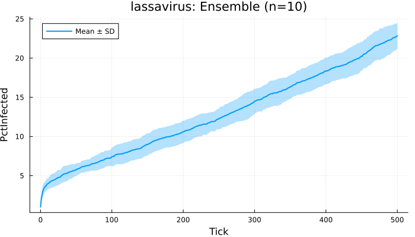

LassaVirus
Overview
WHAT IS IT?
This model simulates the transmission and perpetuation of a virus in a human population.
Ecological biologists have suggested a number of factors which may influence the survival of a directly transmitted virus within a population. (Yorke, et al. “Seasonality and the requirements for perpetuation and eradication of viruses in populations.” Journal of Epidemiology, volume 109, pages 103-123)
HOW IT WORKS
The model is initialized with 150 people, of which 10 are infected. People move randomly about the world in one of three states: healthy but susceptible to infection (green), sick and infectious (red), and healthy and immune (gray). People may die of infection or old age. When the population dips below the environment’s “carrying capacity” (set at 300 in this model) healthy people may produce healthy (but susceptible) offspring.
Some of these factors are summarized below with an explanation of how each one is treated in this model.
THINGS TO NOTICE
The factors controlled by the three sliders interact to influence how likely the virus is to thrive in this population. Notice that in all cases, these factors must create a balance in which an adequate number of potential hosts remain available to the virus and in which the virus can adequately access those hosts.
Often there will initially be an explosion of infection since no one in the population is immune. This approximates the initial “outbreak” of a viral infection in a population, one that often has devastating consequences for the humans concerned. Soon, however, the virus becomes less common as the population dynamics change. What ultimately happens to the virus is determined by the factors controlled by the sliders.
Notice that viruses that are too successful at first (infecting almost everyone) may not survive in the long term. Since everyone infected generally dies or becomes immune as a result, the potential number of hosts is often limited. The exception to the above is when the DURATION slider is set so high that population turnover (reproduction) can keep up and provide new hosts.
THINGS TO TRY
Think about how different slider values might approximate the dynamics of real-life viruses. The famous Ebola virus in central Africa has a very short duration, a very high infectiousness value, and an extremely low recovery rate. For all the fear this virus has raised, how successful is it? Set the sliders appropriately and watch what happens.
The HIV virus, which causes AIDS, has an extremely long duration, an extremely low recovery rate, but an extremely low infectiousness value. How does a virus with these slider values fare in this model?
EXTENDING THE MODEL
Add additional sliders controlling the carrying capacity of the world (how many people can be in the world at one time), the average lifespan of the people and their birth-rate.
Build a similar model simulating viral infection of a non-human host with very different reproductive rates, lifespans, and population densities.
Add a slider controlling how long immunity lasts. You could also make immunity imperfect, so that immune turtles still have a small chance of getting infected. This chance could get higher over time.
RELATED MODELS
- HIV
- Virus on a Network
CREDITS AND REFERENCES
This model can show an alternate visualization of the Virus model using circles to represent the people. It uses visualization techniques as recommended in the paper:
Kornhauser, D., Wilensky, U., & Rand, W. (2009). Design guidelines for agent based model visualization. Journal of Artificial Societies and Social Simulation, JASSS, 12(2), 1.
HOW TO CITE
If you mention this model or the NetLogo software in a publication, we ask that you include the citations below.
For the model itself:
- Wilensky, U. (1998). NetLogo Virus model. http://ccl.northwestern.edu/netlogo/models/Virus. Center for Connected Learning and Computer-Based Modeling, Northwestern University, Evanston, IL.
Please cite the NetLogo software as:
- Wilensky, U. (1999). NetLogo. http://ccl.northwestern.edu/netlogo/. Center for Connected Learning and Computer-Based Modeling, Northwestern University, Evanston, IL.
COPYRIGHT AND LICENSE
Copyright 1998 Uri Wilensky.

This model is licensed under the Creative Commons Attribution-NonCommercial-ShareAlike 3.0 License. To view a copy of this license, visit https://creativecommons.org/licenses/by-nc-sa/3.0/ or send a letter to Creative Commons, 559 Nathan Abbott Way, Stanford, California 94305, USA.
NetLogo itself is free software for non-commercial use under the terms of the GNU General Public License (see full license information here).
To inquire about commercial licenses for either NetLogo or specific models from the models library, please contact netlogo-commercial-admin@ccl.northwestern.edu.
This model was created as part of the project: CONNECTED MATHEMATICS: MAKING SENSE OF COMPLEX PHENOMENA THROUGH BUILDING OBJECT-BASED PARALLEL MODELS (OBPML). The project gratefully acknowledges the support of the National Science Foundation (Applications of Advanced Technologies Program) – grant numbers RED #9552950 and REC #9632612.
This model was converted to NetLogo as part of the projects: PARTICIPATORY SIMULATIONS: NETWORK-BASED DESIGN FOR SYSTEMS LEARNING IN CLASSROOMS and/or INTEGRATED SIMULATION AND MODELING ENVIRONMENT. The project gratefully acknowledges the support of the National Science Foundation (REPP & ROLE programs) – grant numbers REC #9814682 and REC-0126227. Converted from StarLogoT to NetLogo, 2001.
Parameters
| Parameter | Type | Default | Description |
|---|---|---|---|
Human_Population | Int | 500 | Human Population |
Multimammate_Rat_Population | Int | 25 | Multimammate Rat Population |
Initial_Number_Of_Cases | Int | 5 | Initial Number Of Cases |
pct_Severe_Cases | Int | 20 | pct Severe Cases |
pct_Infectiousness_H2H | Int | 20 | pct Infectiousness H2H |
pct_Infectiousness_R2H | Int | 40 | pct Infectiousness R2H |
Incubation_Period | Int | 10 | Incubation Period |
Sick_Days | Int | 15 | Sick Days |
CFR_Mild_Case | Int | 1 | CFR Mild Case |
CFR_Severe_Case | Int | 15 | CFR Severe Case |
Human_Behaviour_Factor | Float64 | 0.8 | Human Behaviour Factor |
Infectious_Days_After_Recovery | Int | 90 | Infectious Days After Recovery |
world_min | Int | -16 | world min |
world_max | Int | 16 | world max |
max_ticks | Int | 500 | max ticks |
Source Code
The Julia code to run this model:
using ArkModelZoo
_, trajectory = run_lassavirus()Time Series

Ensemble Runs
Ten replicates with different random seeds, showing mean ± standard deviation.

Parameter Sensitivity
Varying Human_Population.

Appendix: Source Code
This model is implemented in the Ark.jl Entity-Component-System (ECS) framework. The code is split into five files, each with a distinct role:
- Parameters: a mutable struct holding all configurable values.
- Components: lightweight data types attached to individual entities (agents).
- Resources: world-level shared state accessible to all systems.
- Systems: functions that operate on entities each tick, defining model behavior.
- Model: wiring that assembles the world, registers resources and systems, and provides the run entry point.
Parameters (parameters.jl)
The parameter struct uses @kwdef so that every field has a default value and can be overridden by keyword. These defaults match the original NetLogo model’s slider settings.
# Lassa Virus – parameters with defaults matching NetLogo reference
Base.@kwdef mutable struct LassaParams
Human_Population::Int = 500
Multimammate_Rat_Population::Int = 25
Initial_Number_Of_Cases::Int = 5
pct_Severe_Cases::Int = 20
pct_Infectiousness_H2H::Int = 20
pct_Infectiousness_R2H::Int = 40
Incubation_Period::Int = 10
Sick_Days::Int = 15
CFR_Mild_Case::Int = 1
CFR_Severe_Case::Int = 15
Human_Behaviour_Factor::Float64 = 0.8
Infectious_Days_After_Recovery::Int = 90
world_min::Int = -16
world_max::Int = 16
max_ticks::Int = 500
seed::Int = 42
endComponents (components.jl)
Components are lightweight data types attached to individual entities (agents). Mutable structs hold per-entity state, while empty tag structs act as markers for the ECS query system to efficiently filter entities.
# Lassa Virus – ECS components
# Disease states matching NetLogo color-based states
@enum LassaHealthStatus begin
LassaSusceptible = 1 # white
LassaIncubating = 2 # yellow
LassaMild = 3 # orange+2
LassaSevere = 4 # red
LassaImmuneInfectious = 5 # cyan
LassaImmune = 6 # lime+1
LassaDead = 7 # gray
end
# Shared position component for both breeds
mutable struct LassaPosition
x::Float64
y::Float64
end
LassaPosition() = LassaPosition(0.0, 0.0)
mutable struct LassaHeading
angle::Float64
end
LassaHeading() = LassaHeading(0.0)
# Human-specific components
mutable struct HumanState
status::LassaHealthStatus
hours::Int
human_speed::Float64
end
HumanState() = HumanState(LassaSusceptible, 0, 1.0)
# Rat marker (tag component)
mutable struct RatTag
_::Bool
end
RatTag() = RatTag(true)Resources (resources.jl)
Resources are world-level singletons shared across all systems, used for global state and aggregate statistics.
# Lassa Virus – model-specific resources
mutable struct LassaStats
infected_not_infectious::Int
mild_cases_count::Int
severe_cases_count::Int
immune_infectious::Int
immune_not_infectious::Int
total_immune::Int
current_cases::Int
mild_cases::Int # running total of transitions to mild
severe_cases::Int # running total of transitions to severe
total_mild_cases::Float64
total_severe_cases::Float64
total_cases::Float64
total_infectious::Int
total_infected::Float64
total_fatalities::Int
fatalities::Int # running total of deaths
pct_infected::Float64
pct_uninfected::Float64
pct_immune::Float64
average_pct_CFR::Float64
end
LassaStats() = LassaStats(0, 0, 0, 0, 0, 0, 0, 0, 0, 0.0, 0.0, 0.0, 0, 0.0, 0, 0, 0.0, 0.0, 0.0, 0.0)
mutable struct LassaRegistry
human_entities::Vector{Entity}
rat_entities::Vector{Entity}
end
LassaRegistry() = LassaRegistry(Entity[], Entity[])Systems (systems.jl)
Systems contain the model logic and execute in a defined order each tick. Each system struct implements either initialize! (run once at setup) or update! (run every tick).
# Lassa Virus – ECS systems matching the NetLogo reference.
# Execution order: init → movement → infection+progression → stats → termination
#
# NetLogo model uses color to track disease states. Two breeds: rats and humans.
# Rats just move and carry infection. Humans have full disease progression.
# --- Initialization ---
struct InitLassaSystem <: System end
function initialize!(::InitLassaSystem, world::World)
params = get_resource(world, LassaParams)
rng = get_resource(world, RNGResource).rng
registry = get_resource(world, LassaRegistry)
stats = get_resource(world, LassaStats)
wspan = params.world_max - params.world_min + 1 # 33
w = Float64(wspan)
pct_Mild_Cases = 100 - params.pct_Severe_Cases
initial_mild = (params.Initial_Number_Of_Cases * pct_Mild_Cases) / 100
initial_severe = (params.Initial_Number_Of_Cases * params.pct_Severe_Cases) / 100
# Create rats
empty!(registry.rat_entities)
for _ in 1:params.Multimammate_Rat_Population
# random-xcor gives float in [-16.5, 16.5) → offset to [0, 33)
x = rand(rng) * w
y = rand(rng) * w
e = new_entity!(world, (
LassaPosition(x, y),
LassaHeading(Float64(rand(rng, 0:359))),
RatTag(true),
))
push!(registry.rat_entities, e)
end
# Create humans
empty!(registry.human_entities)
for _ in 1:params.Human_Population
x = rand(rng) * w
y = rand(rng) * w
e = new_entity!(world, (
LassaPosition(x, y),
LassaHeading(Float64(rand(rng, 0:359))),
HumanState(LassaSusceptible, 0, Float64(1)), # control_speed = 1
))
push!(registry.human_entities, e)
end
# Initial cases: ask n-of initial_mild_cases Humans [set color orange+2]
shuffled = copy(registry.human_entities)
Random.shuffle!(rng, shuffled)
mild_count = round(Int, initial_mild)
severe_count = round(Int, initial_severe)
for i in 1:mild_count
hs = get_components(world, shuffled[i], (HumanState,))[1]
hs.status = LassaMild
end
for i in (mild_count+1):(mild_count+severe_count)
hs = get_components(world, shuffled[i], (HumanState,))[1]
hs.status = LassaSevere
end
# Initialize stats running totals
stats.mild_cases = 0
stats.severe_cases = 0
stats.fatalities = 0
stats.infected_not_infectious = 0
stats.mild_cases_count = mild_count
stats.severe_cases_count = severe_count
stats.immune_infectious = 0
stats.immune_not_infectious = 0
stats.total_immune = 0
stats.current_cases = mild_count + severe_count
stats.total_mild_cases = Float64(initial_mild)
stats.total_severe_cases = Float64(initial_severe)
stats.total_cases = initial_mild + initial_severe
stats.total_infectious = mild_count + severe_count
stats.total_fatalities = 0
stats.total_infected = Float64(stats.infected_not_infectious + stats.total_infectious + stats.total_fatalities)
stats.pct_infected = (stats.total_infected / params.Human_Population) * 100
stats.pct_uninfected = 100.0 - stats.pct_infected
stats.pct_immune = 0.0
stats.average_pct_CFR = 0.0
return nothing
end
# --- Movement ---
# NetLogo: rats fd control_speed * -1 * ((1/HBF)*0.01); rt random 100; lt random 100
# humans fd human_speed * ((1/HBF)*0.01); rt random 45; lt random 45; hours += 1
struct LassaMovementSystem <: System end
function _lassa_wrap!(pos::LassaPosition, w::Float64)
pos.x = mod(pos.x, w)
pos.y = mod(pos.y, w)
return nothing
end
function _lassa_fd!(pos::LassaPosition, heading::LassaHeading, dist::Float64, w::Float64)
rad = heading.angle * π / 180.0
pos.x += sin(rad) * dist
pos.y += cos(rad) * dist
_lassa_wrap!(pos, w)
return nothing
end
function update!(::LassaMovementSystem, world::World)
params = get_resource(world, LassaParams)
rng = get_resource(world, RNGResource).rng
registry = get_resource(world, LassaRegistry)
wspan = params.world_max - params.world_min + 1
w = Float64(wspan)
control_speed = 1.0
# ask rats [fd ...; rt random 100; lt random 100]
rat_order = randperm(rng, length(registry.rat_entities))
for ri in rat_order
re = registry.rat_entities[ri]
rpos, rhead = get_components(world, re, (LassaPosition, LassaHeading))
dist = control_speed * -1.0 * ((1.0 / params.Human_Behaviour_Factor) * 0.01)
_lassa_fd!(rpos, rhead, dist, w)
rhead.angle += rand(rng, 0:99) - rand(rng, 0:99)
rhead.angle = mod(rhead.angle, 360.0)
end
# ask humans [fd ...; rt random 45; lt random 45; set hours hours + 1]
human_order = randperm(rng, length(registry.human_entities))
for hi in human_order
he = registry.human_entities[hi]
hpos, hhead, hstate = get_components(world, he, (LassaPosition, LassaHeading, HumanState))
dist = hstate.human_speed * ((1.0 / params.Human_Behaviour_Factor) * 0.01)
_lassa_fd!(hpos, hhead, dist, w)
hhead.angle += rand(rng, 0:44) - rand(rng, 0:44)
hhead.angle = mod(hhead.angle, 360.0)
hstate.hours += 1
end
return nothing
end
# --- Infection and Disease Progression ---
# This is the big combined system matching the NetLogo `ask humans [...]` block.
# Each human is processed in random order. Infection checks use "here" (same patch).
struct LassaInfectionSystem <: System end
# Check if two positions are on the same patch (same rounded coords)
function _lassa_same_patch(p1::LassaPosition, p2::LassaPosition, min_coord::Int)
return round(Int, p1.x + min_coord) == round(Int, p2.x + min_coord) &&
round(Int, p1.y + min_coord) == round(Int, p2.y + min_coord)
end
function update!(::LassaInfectionSystem, world::World)
params = get_resource(world, LassaParams)
rng = get_resource(world, RNGResource).rng
registry = get_resource(world, LassaRegistry)
stats = get_resource(world, LassaStats)
immune_or_severe_pct = params.pct_Infectiousness_H2H * (1.0 - params.Human_Behaviour_Factor)
n_humans = length(registry.human_entities)
n_rats = length(registry.rat_entities)
# ask humans (random order)
human_order = randperm(rng, n_humans)
for hi in human_order
he = registry.human_entities[hi]
hpos, hstate = get_components(world, he, (LassaPosition, HumanState))
# --- Infection spreading ---
# Mild cases infect other humans-here
if hstate.status == LassaMild
# ask other humans-here
for hj in 1:n_humans
hj == hi && continue
he2 = registry.human_entities[hj]
hpos2, hstate2 = get_components(world, he2, (LassaPosition, HumanState))
if _lassa_same_patch(hpos, hpos2, params.world_min)
# random 100 < pct_Infectiousness_H2H (integer random)
if rand(rng, 0:99) < params.pct_Infectiousness_H2H
if hstate2.status == LassaSusceptible
hstate2.status = LassaIncubating
hstate2.hours = 0
end
end
end
end
else
# Rats infect humans-here
# NetLogo: ask rats [ask other humans-here [...]]
for ri in 1:n_rats
re = registry.rat_entities[ri]
rpos = get_components(world, re, (LassaPosition,))[1]
# Check if this human is at same patch as this rat
if _lassa_same_patch(hpos, rpos, params.world_min)
# random-float 100 < pct_Infectiousness_R2H
if rand(rng) * 100.0 < params.pct_Infectiousness_R2H
if hstate.status == LassaSusceptible
hstate.status = LassaIncubating
hstate.hours = 0
end
end
end
end
end
# Immune-infectious or severe infect others
if hstate.status == LassaImmuneInfectious || hstate.status == LassaSevere
for hj in 1:n_humans
hj == hi && continue
he2 = registry.human_entities[hj]
hpos2, hstate2 = get_components(world, he2, (LassaPosition, HumanState))
if _lassa_same_patch(hpos, hpos2, params.world_min)
if rand(rng) * 100.0 < immune_or_severe_pct
if hstate2.status == LassaSusceptible
hstate2.status = LassaIncubating
hstate2.hours = 0
end
end
end
end
end
# --- Disease Progression ---
# Incubating → Mild or Severe
if hstate.status == LassaIncubating && hstate.hours > (params.Incubation_Period * 24)
if rand(rng) * 100.0 < params.pct_Severe_Cases
hstate.status = LassaSevere
stats.severe_cases += 1
hstate.hours = 0
hstate.human_speed = 0.0
else
hstate.status = LassaMild
stats.mild_cases += 1
hstate.hours = 0
hstate.human_speed = 0.5
end
end
# Mild → Dead or Immune-Infectious
if hstate.status == LassaMild && hstate.hours == (params.Sick_Days * 24)
if rand(rng) * 100.0 < params.CFR_Mild_Case
hstate.status = LassaDead
stats.fatalities += 1
hstate.hours = 0
hstate.human_speed = 0.0
else
hstate.status = LassaImmuneInfectious
hstate.hours = 0
hstate.human_speed = 0.5
end
end
# Severe → Dead or Immune-Infectious
if hstate.status == LassaSevere && hstate.hours == (params.Sick_Days * 24)
if rand(rng) * 100.0 < params.CFR_Severe_Case
hstate.status = LassaDead
stats.fatalities += 1
hstate.hours = 0
hstate.human_speed = 0.0
else
hstate.status = LassaImmuneInfectious
hstate.hours = 0
hstate.human_speed = 1.0 # control_speed
end
end
# Immune-Infectious → Immune
if hstate.status == LassaImmuneInfectious && hstate.hours == (params.Infectious_Days_After_Recovery * 24)
hstate.status = LassaImmune
hstate.hours = 0
hstate.human_speed = 1.0 # control_speed
end
end
return nothing
end
# --- Statistics ---
# Compute all tracked globals matching NetLogo
struct LassaStatsSystem <: System end
function update!(::LassaStatsSystem, world::World)
params = get_resource(world, LassaParams)
registry = get_resource(world, LassaRegistry)
stats = get_resource(world, LassaStats)
pct_Mild_Cases = 100 - params.pct_Severe_Cases
initial_mild = (params.Initial_Number_Of_Cases * pct_Mild_Cases) / 100.0
initial_severe = (params.Initial_Number_Of_Cases * params.pct_Severe_Cases) / 100.0
n_incubating = 0
n_mild = 0
n_severe = 0
n_immune_inf = 0
n_immune = 0
n_susceptible = 0
n_dead = 0
for he in registry.human_entities
hs = get_components(world, he, (HumanState,))[1]
s = hs.status
if s == LassaSusceptible
n_susceptible += 1
elseif s == LassaIncubating
n_incubating += 1
elseif s == LassaMild
n_mild += 1
elseif s == LassaSevere
n_severe += 1
elseif s == LassaImmuneInfectious
n_immune_inf += 1
elseif s == LassaImmune
n_immune += 1
elseif s == LassaDead
n_dead += 1
end
end
stats.infected_not_infectious = n_incubating
stats.mild_cases_count = n_mild
stats.severe_cases_count = n_severe
stats.immune_infectious = n_immune_inf
stats.immune_not_infectious = n_immune
stats.total_immune = n_immune_inf + n_immune
stats.current_cases = n_mild + n_severe
stats.total_mild_cases = stats.mild_cases + initial_mild
stats.total_severe_cases = stats.severe_cases + initial_severe
stats.total_cases = stats.total_mild_cases + stats.total_severe_cases
stats.total_infectious = stats.current_cases + n_immune_inf
stats.total_fatalities = n_dead # count humans with [color = gray]
stats.total_infected = Float64(stats.infected_not_infectious + stats.total_infectious + stats.total_fatalities)
if stats.total_cases > 0
stats.average_pct_CFR = (stats.fatalities / stats.total_cases) * 100.0
else
stats.average_pct_CFR = 0.0
end
stats.pct_infected = (stats.total_infected / params.Human_Population) * 100.0
stats.pct_uninfected = (n_susceptible / params.Human_Population) * 100.0
stats.pct_immune = (stats.total_immune / params.Human_Population) * 100.0
return nothing
end
# --- Termination ---
# NetLogo: if infected_not_infectious + current_cases + count humans with [color = white] = 0 [stop]
struct LassaTerminationSystem <: System end
function update!(::LassaTerminationSystem, world::World)
params = get_resource(world, LassaParams)
tick = get_resource(world, Tick)
stats = get_resource(world, LassaStats)
# Count susceptible humans
n_susceptible = 0
registry = get_resource(world, LassaRegistry)
for he in registry.human_entities
hs = get_components(world, he, (HumanState,))[1]
if hs.status == LassaSusceptible
n_susceptible += 1
end
end
if (stats.infected_not_infectious + stats.current_cases + n_susceptible == 0) ||
tick.tick + 1 >= params.max_ticks
get_resource(world, Terminate).stop = true
end
return nothing
endModel (model.jl)
The model file assembles all pieces: it creates the ECS World with the required component types, registers resources, builds the Scheduler with systems in execution order, and exposes the public run entry point. The observer pattern records the trajectory each tick.
function lassavirus_world(; initial_capacity::Int = 1024)
return World(
LassaPosition,
LassaHeading,
HumanState,
RatTag;
initial_capacity = initial_capacity,
allow_mutable = true,
)
end
function lassavirus_systems()
return (
InitLassaSystem(),
LassaMovementSystem(),
LassaInfectionSystem(),
LassaStatsSystem(),
LassaTerminationSystem(),
)
end
function lassavirus_model(params::LassaParams = LassaParams())
world = lassavirus_world()
_add_standard_resources!(world, params)
add_resource!(world, LassaStats())
add_resource!(world, LassaRegistry())
scheduler = Scheduler(world, lassavirus_systems())
initialize!(scheduler)
return scheduler
end
struct LassaVirusObserver end
function lassavirus_headers(::LassaVirusObserver)
return ["PctInfected", "PctImmune", "CurrentCases", "TotalFatalities"]
end
function lassavirus_values(::LassaVirusObserver, world::World)
stats = get_resource(world, LassaStats)
return Float64[stats.pct_infected, stats.pct_immune, Float64(stats.current_cases), Float64(stats.total_fatalities)]
end
function run_lassavirus(; params::LassaParams = LassaParams(), observe::Bool = true)
return _run_model(lassavirus_model, LassaVirusObserver(), lassavirus_values; params, observe)
end